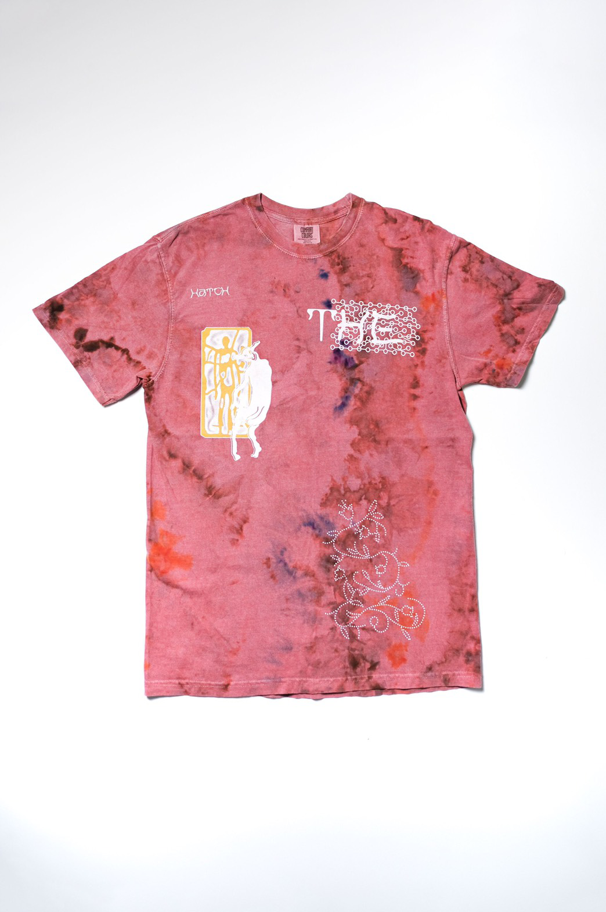

Lanzamiento de nuevo merch en colaboración con Oven Universe
Nuevo merch de The Hatch se encuentra disponible en la tienda online Oven Universe, en este caso se trata de una remera teñida a mano diseñada por el artista ARIKA con quien la banda ya trabajo previamente al momento de lanzar otros productos. La misma tendrá una cantidad limitada de 30 unidades y se podrá encontrar en los talles S, M, L y XL a un precio de ¥5,000. Para más información haga click aquí.
山田みどり y la presentación de GEZAN en Fuji Rock Festival 2021
El 22 de Agosto GEZAN se presentó en el último día del festival Fuji Rock, dicha fecha fue un día importante para el grupo dado que se contaba de su primer show con una nueva formación desde que su anterior bajista, カルロス・尾崎 (Carlos Ozaki), decidio dejar la banda a finales de Enero de este año siendo reemplazado por un joven de 18 años apodado ヤクモア (Yakumoor) quien logro ser el seleccionado una vez que terminaron las audiciones en busca de un nuevo miembro. En cuanto su presentación la misma fue transmitida por YouTube al igual que gran parte de otros artistas que participaron del festival, en la misma presentaron algunas de las canciones de su album anterior "KLUE" y clásicos del grupo como "DNA" al igual que una pequeña muestra de lo que es su nuevo material y por si esto fuese poco, para sorpresa de sus fanáticos el grupo liderado por Mahito The People se encontraba acompañado por un gran número de personas durante su performance, siendo una de estas personas nada más ni nada menos que 山田みどり (Midori Yamada) quien se encontraba acompañado de su característico trombón al igual que haber sido invitado para colaborar con su voz durante el transcurso de la canción BODY ODD, donde diferentes miembros de los grupos ゆるふわギャング, kk manga, The Act We Act y NICE VIEW también participaron.
Edición limitada de OpaqueAge en formato vinilo
OpaqueAge será el noveno título que formara parte del proyecto "13th Straight Month Vinyl" realizado por el sello discografico independiente 十三月 (Jusangatsu) el cual fue formado por los miembros originales de la banda GEZAN durante sus inicios y con quienes The Hatch lograron formar una relacion muy cercana. El album fue remasterizado para este lanzamiento y el mismo que estara disponible en una cantidad limitada de 500 copias. El precio del mismo será de ¥3,300
Campaña de crowdfunding para ayudar al live venue Sound Crue
Una nueva grabación de The Hatch será incluida en un próximo split conformado por Discharming Man, chikyunokiki y Nango quienes tambien son originarios de Sapporo. Este split va a estar exclusivamente disponible para aquellos que hayan apoyado la campaña de crowdfunding para ayudar al live venue "Sound Crue" quienes se encuentran gravemente afectados desde que comenzó la pandemia de COVID-19. Todas las canciones que forman parte de este lanzamiento fueron grabadas en el propio establecimiento de Sound Crue durante el 25 y 26 de Julio 2021 y al tratarse de pistas exclusivas para esta campaña las mismas no estarán disponibles en futuros lanzamientos de cada uno de los proyectos. El precio del CD es de ¥3,300 y se espera que sea enviado durante el transcurso del mes de Noviembre aun así este lanzamiento solamente se trata de uno de los beneficios que este crowdfunding está ofreciendo por lo que aquellos que estén interesados en como poder colaborar con la causa tendrán tiempo de hacerlo hasta el día 27 de Septiembre de 2021 y haciendo click aquí encontraran más información.
Te presentamos "穏やかな日々" lo nuevo de The Hatch

Un nuevo lanzamiento de The Hatch se encuentra disponible en los diferentes servicios de streaming, en este caso se trata de un single titulado "穏やかな日々" o "Refused to Calm days" como se le conoce en ingles. Por el momento no hay mucha más información sobre cuando el próximo álbum de la banda va a salir a la venta, pero esta nueva pista nos demuestra que el grupo continúan con experimentar con nuevas maneras de escribir canciones sin perder esa esencia que muchos de sus fanáticos disfrutan tanto.